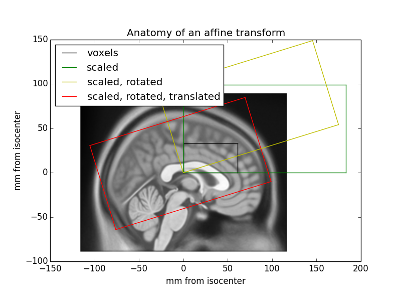

Coordinate systems and affines¶
A nibabel (and nipy) image is the association of three things:
The image data array: a 3D or 4D array of image data
An affine array that tells you the position of the image array data in a reference space.
image metadata (data about the data) describing the image, usually in the form of an image header.
This document describes how the affine array describes the position of the image data in a reference space. On the way we will define what we mean by reference space, and the reference spaces that Nibabel uses.
Introducing Someone¶
We have scanned someone called “Someone”, and we have a two MRI images of their brain, a single EPI volume, and a structural scan. In general we never use the person’s name in the image filenames, but we make an exception in this case:
We can load up the EPI image to get the image data array:
>>> import nibabel as nib
>>> epi_img = nib.load('downloads/someones_epi.nii.gz')
>>> epi_img_data = epi_img.get_fdata()
>>> epi_img_data.shape
(53, 61, 33)
Then we have a look at slices over the first, second and third dimensions of the array.
>>> import matplotlib.pyplot as plt
>>> def show_slices(slices):
... """ Function to display row of image slices """
... fig, axes = plt.subplots(1, len(slices))
... for i, slice in enumerate(slices):
... axes[i].imshow(slice.T, cmap="gray", origin="lower")
>>>
>>> slice_0 = epi_img_data[26, :, :]
>>> slice_1 = epi_img_data[:, 30, :]
>>> slice_2 = epi_img_data[:, :, 16]
>>> show_slices([slice_0, slice_1, slice_2])
>>> plt.suptitle("Center slices for EPI image")
{kind=link}
{kind=link}
We collected an anatomical image in the same session. We can load that image and look at slices in the three axes:
>>> anat_img = nib.load('downloads/someones_anatomy.nii.gz')
>>> anat_img_data = anat_img.get_fdata()
>>> anat_img_data.shape
(57, 67, 56)
>>> show_slices([anat_img_data[28, :, :],
... anat_img_data[:, 33, :],
... anat_img_data[:, :, 28]])
>>> plt.suptitle("Center slices for anatomical image")

{kind=link}
{kind=link}
{kind=link}
{kind=link}
As is usually the case, we had a different field of view for the anatomical scan, and so the anatomical image has a different shape, size, and orientation in the magnet.
Voxel coordinates are coordinates in the image data array¶
As y’all know, a voxel is a pixel with volume.
In the code above, slice_0 from the EPI data is a 2D slice from a 3D
image. The plot of the EPI slices displays the slices in grayscale (graded
between black for the minimum value, white for the maximum). Each pixel in
the slice grayscale image also represents a voxel, because this 2D image
represents a slice from the 3D image with a certain thickness.
The 3D array is therefore also a voxel array. As for any array, we can select particular values by indexing. For example, we can get the value for the middle voxel in the EPI data array like this:
>>> n_i, n_j, n_k = epi_img_data.shape
>>> center_i = (n_i - 1) // 2 # // for integer division
>>> center_j = (n_j - 1) // 2
>>> center_k = (n_k - 1) // 2
>>> center_i, center_j, center_k
(26, 30, 16)
>>> center_vox_value = epi_img_data[center_i, center_j, center_k]
>>> center_vox_value
81.5492877960205...
The values (26, 30, 16) are indices into the data array epi_img_data. (26,
30, 16) is therefore a ‘voxel coordinate’ - a coordinate into the voxel array.
A coordinate is a set of numbers giving positions relative to a set of axes.
In this case 26 is a position on the first array axis, where the axis is of
length epi_img_data.shape[0], and therefore goes from 0 to 52
(epi_img_data.shape == (53, 61, 33)). Similarly 30 gives a position on
the second axis (0 to 60) and 16 is the position on the third axis (0 to 32).
Voxel coordinates and points in space¶
The voxel coordinate tells us almost nothing about where the data came from in terms of position in the scanner. For example, let’s say we have the voxel coordinate (26, 30, 16). Without more information we have no idea whether this voxel position is on the left or right of the brain, or came from the left or right of the scanner.
This is because the scanner allows us to collect voxel data in almost any arbitrary position and orientation within the magnet.
In the case of Someone’s EPI, we took transverse slices at a moderate angle to
the floor to ceiling direction. This localizer image from the scanner console
has a red box that shows the position of the slice block for
someones_epi.nii.gz and a blue box for the slice block of
someones_anatomy.nii.gz:
The localizer is oriented to the magnet, so that the left and right borders of the image are parallel to the floor of the scanner room, with the left border being towards the floor and the right border towards the ceiling.
You will see from the labels on the localizer that the center of the EPI voxel
data block (at 26, 30, 16 in epi_img_data) is not quite at the center of
magnet bore (the magnet isocenter).
We have an anatomical and an EPI scan, and later on we will surely want to be
able to relate the data from someones_epi.nii.gz to
someones_anatomy.nii.gz. We can’t easily do this at the moment, because
we collected the anatomical image with a different field of view and
orientation to the EPI image, so the voxel coordinates in the EPI image refer
to different locations in the magnet to the voxel coordinates in the
anatomical image.
We solve this problem by keeping track of the relationship of voxel
coordinates to some reference space. In particular, the affine array
stores the relationship between voxel coordinates in the image data array and
coordinates in the reference space. We store the relationship of voxel
coordinates from someones_epi.nii.gz and the reference space, and also the
(different) relationship of voxel coordinates in someones_anatomy.nii.gz
to the same reference space. Because we know the relationship of (voxel
coordinates to the reference space) for both images, we can use this
information to relate voxel coordinates in someones_epi.nii.gz to spatially
equivalent voxel coordinates in someones_anatomy.nii.gz.
The scanner-subject reference space¶
What does “space” mean in the phrase “reference space”? The space is defined by an ordered set of axes. For our 3D spatial world, it is a set of 3 independent axes.
We can decide what space we want to use, by choosing these axes. We need to choose the origin of the axes, their direction and their units.
To start with, we define a set of three orthogonal scanner axes.
The scanner axes¶
The origin of the axes is at the magnet isocenter. This is coordinate (0, 0, 0) in our reference space. All three axes pass through the isocenter.
The units for all three axes are millimeters.
Imagine an observer standing behind the scanner looking through the magnet bore towards the end of the scanner bed. Imagine a line traveling towards the observer through the center of the magnet bore, parallel to the bed, with the zero point at the magnet isocenter, and positive values closer to the observer. Call this line the scanner-bore axis.
Draw a line traveling from the scanner room floor up through the magnet isocenter towards the ceiling, at right angles to the scanner bore axis. 0 is at isocenter and positive values are towards the ceiling. Call this the scanner-floor/ceiling axis.
Draw a line at right angles to the other two lines, traveling from the observer’s left, parallel to the floor, and through the magnet isocenter to the observer’s right. 0 is at isocenter and positive values are to the right. Call this the scanner-left/right.
If we make the axes have order (scanner left-right; scanner floor-ceiling; scanner bore) then we have an ordered set of 3 axes and therefore the definition of a 3D space. Call the first axis the “X” axis, the second “Y” and the third “Z”. A coordinate of \((x, y, z) = (10, -5, -3)\) in this space refers to the point in space 10mm to the (fictional observer’s) right of isocenter, 5mm towards the floor from the isocenter, and 3mm towards the foot of the scanner bed. This reference space is sometimes known as “scanner XYZ”. It was the standard reference space for the predecessor to DICOM, called ACR / NEMA 2.0.
From scanner to subject¶
If the subject is lying in the usual position for a brain scan, face up and head first in the scanner, then scanner-left/right is also the left-right axis of the subject’s head, scanner-floor/ceiling is the posterior-anterior axis of the head and scanner-bore is the inferior-superior axis of the head.
Sometimes the subject is not lying in the standard position. For example, the subject may be lying with their face pointing to the right (in terms of the scanner-left/right axis). In that case “scanner XYZ” will not tell us about the subject’s left and right, but only the scanner left and right. We might prefer to know where we are in terms of the subject’s left and right.
To deal with this problem, most reference spaces use subject- or patient- centered scanner coordinate systems. In these systems, the axes are still the scanner axes above, but the ordering and direction of the axes comes from the position of the subject. The most common subject-centered scanner coordinate system in neuroimaging is called “scanner RAS” (right, anterior, superior). Here the scanner axes are reordered and flipped so that the first axis is the scanner axis that is closest to the left to right axis of the subject, the second is the closest scanner axis to the posterior-anterior axis of the subject, and the third is the closest scanner axis to the inferior-superior axis of the subject. For example, if the subject was lying face to the right in the scanner, then the first (X) axis of the reference system would be scanner-floor/ceiling, but reversed so that positive values are towards the floor. This axis goes from left to right in the subject, with positive values to the right. The second (Y) axis would be scanner-left/right (posterior-anterior in the subject), and the Z axis would be scanner-bore (inferior-superior).
Naming reference spaces¶
Reading names of reference spaces can be confusing because of different meanings that authors use for the same terms, such as ‘left’ and ‘right’.
We are using the term “RAS” to mean that the axes are (in terms of the subject): left to Right; posterior to Anterior; and inferior to Superior, respectively. Although it is common to call this convention “RAS”, it is not quite universal, because some use “R”, “A” and “S” in “RAS” to mean that the axes starts on the right, anterior, superior of the subject, rather than ending on the right, anterior, superior. In other words, they would use “RAS” to refer to a coordinate system we would call “LPI”. To be safe, we’ll call our interpretation of the RAS convention “RAS+”, meaning that Right, Anterior, Superior are all positive values on these axes.
Some people also use “right” to mean the right hand side when an observer looks at the front of the scanner, from the foot the scanner bed. Unfortunately, this means that you have to read coordinate system definitions carefully if you are not familiar with a particular convention. We nibabel / nipy folks agree with most of our brain imaging friends and many of our enemies in that we always use “right” to mean the subject’s right.
Voxel coordinates are in voxel space¶
We have not yet made this explicit, but voxel coordinates are also in a space. In this case the space is defined by the three voxel axes (first axis, second axis, third axis), where 0, 0, 0 is the center of the first voxel in the array and the units on the axes are voxels. Voxel coordinates are therefore defined in a reference space called voxel space.
The affine matrix as a transformation between spaces¶
We have voxel coordinates (in voxel space). We want to get scanner RAS+ coordinates corresponding to the voxel coordinates. We need a coordinate transform to take us from voxel coordinates to scanner RAS+ coordinates.
In general, we have some voxel space coordinate \((i, j, k)\), and we want to generate the reference space coordinate \((x, y, z)\).
Imagine we had solved this, and we had a coordinate transform function \(f\) that accepts a voxel coordinate and returns a coordinate in the reference space:
\(f\) accepts a coordinate in the input space and returns a coordinate in the output space. In our case the input space is voxel space and the output space is scanner RAS+.
In theory \(f\) could be a complicated non-linear function, but in practice, we know that the scanner collects data on a regular grid. This means that the relationship between \((i, j, k)\) and \((x, y, z)\) is linear (actually affine), and can be encoded with linear (actually affine) transformations comprising translations, rotations and zooms (wikipedia linear transform, wikipedia affine transform).
Scaling (zooming) in three dimensions can be represented by a diagonal 3 by 3 matrix. Here’s how to zoom the first dimension by \(p\), the second by \(q\) and the third by \(r\) units:
A rotation in three dimensions can be represented as a 3 by 3 rotation matrix (wikipedia rotation matrix). For example, here is a rotation by \(\theta\) radians around the third array axis:
This is a rotation by \(\phi\) radians around the second array axis:
A rotation of \(\gamma\) radians around the first array axis:
Zoom and rotation matrices can be combined by matrix multiplication.
Here’s a scaling of \(p, q, r\) units followed by a rotation of \(\theta\) radians around the third axis followed by a rotation of \(\phi\) radians around the second axis:
This can also be written:
This might be obvious because the matrix multiplication is the result of applying each transformation in turn on the coordinates output from the previous transformation. Combining the transformations into a single matrix \(M\) works because matrix multiplication is associative – \(ABCD = (ABC)D\).
A translation in three dimensions can be represented as a length 3 vector to be added to the length 3 coordinate. For example, a translation of \(a\) units on the first axis, \(b\) on the second and \(c\) on the third might be written as:
We can write our function \(f\) as a combination of matrix multiplication by some 3 by 3 rotation / zoom matrix \(M\) followed by addition of a 3 by 1 translation vector \((a, b, c)\)
We could record the parameters necessary for \(f\) as the 3 by 3 matrix, \(M\) and the 3 by 1 vector \((a, b, c)\).
In fact, the 4 by 4 image affine array does include exactly this information. If \(m_{i,j}\) is the value in row \(i\) column \(j\) of matrix \(M\), then the image affine matrix \(A\) is:
Why the extra row of \([0, 0, 0, 1]\)? We need this row because we have rephrased the combination of rotations / zooms and translations as a transformation in homogeneous coordinates (see wikipedia homogeneous coordinates). This is a trick that allows us to put the translation part into the same matrix as the rotations / zooms, so that both translations and rotations / zooms can be applied by matrix multiplication. In order to make this work, we have to add an extra 1 to our input and output coordinate vectors:
This results in the same transformation as applying \(M\) and \((a, b, c)\) separately. One advantage of encoding transformations this way is that we can combine two sets of [rotations, zooms, translations] by matrix multiplication of the two corresponding affine matrices.
In practice, although it is common to combine 3D transformations using 4 by 4 affine matrices, we usually apply the transformations by breaking up the affine matrix into its component \(M\) matrix and \((a, b, c)\) vector and doing:
As long as the last row of the 4 by 4 is \([0, 0, 0, 1]\), applying the transformations in this way is mathematically the same as using the full 4 by 4 form, without the inconvenience of adding the extra 1 to our input and output vectors.
The inverse of the affine gives the mapping from scanner to voxel¶
The affine arrays we have described so far have another pleasant property — they are usually invertible. As y’all know, the inverse of a matrix \(A\) is the matrix \(A^{-1}\) such that \(I = A^{-1} A\), where \(I\) is the identity matrix. Put another way:
That means that the inverse of the affine matrix gives the transformation from scanner RAS+ coordinates to voxel coordinates in the image data.
Now imagine we have affine array \(A\) for someones_epi.nii.gz, and affine array
\(B\) for someones_anatomy.nii.gz. \(A\) gives the mapping from voxels in the
image data array of someones_epi.nii.gz to millimeters in scanner RAS+. \(B\)
gives the mapping from voxels in image data array of
someones_anatomy.nii.gz to the same scanner RAS+. Now let’s say we have
a particular voxel coordinate \((i, j, k)\) in the data array of
someones_epi.nii.gz, and we want to find the voxel in
someones_anatomy.nii.gz that is in the same spatial position. Call this
matching voxel coordinate \((i', j', k')\) . We first apply the transform from
someones_epi.nii.gz voxels to scanner RAS+ (\(A\)) and then apply the transform
from scanner RAS+ to voxels in someones_anatomy.nii.gz (\(B^{-1}\)):
The affine by example¶
We can get the affine from the nibabel image object. Here is the affine for the EPI scan:
>>> # Set numpy to print 3 decimal points and suppress small values
>>> import numpy as np
>>> np.set_printoptions(precision=3, suppress=True)
>>> # Print the affine
>>> epi_img.affine
array([[ 3. , 0. , 0. , -78. ],
[ 0. , 2.866, -0.887, -76. ],
[ 0. , 0.887, 2.866, -64. ],
[ 0. , 0. , 0. , 1. ]])
As you see, the last row is \([0, 0, 0, 1]\)
Applying the affine¶
To make the affine simpler to apply, we split it into \(M\) and \((a, b, c)\):
>>> M = epi_img.affine[:3, :3]
>>> abc = epi_img.affine[:3, 3]
Then we can define our function \(f\):
>>> def f(i, j, k):
... """ Return X, Y, Z coordinates for i, j, k """
... return M.dot([i, j, k]) + abc
The labels on the localizer image give the impression
that the center voxel of someones_epi.nii.gz was a little above the magnet
isocenter. Now we can check:
>>> epi_vox_center = (np.array(epi_img_data.shape) - 1) / 2.
>>> f(epi_vox_center[0], epi_vox_center[1], epi_vox_center[2])
array([ 0. , -4.205, 8.453])
That means the center of the image field of view is at the isocenter of the magnet on the left to right axis, and is around 4.2mm posterior to the isocenter and ~8.5 mm above the isocenter.
The parameters in the affine array can therefore give the position of any voxel coordinate, relative to the scanner RAS+ reference space.
We get the same result from applying the affine directly instead of using \(M\) and \((a, b, c)\) in our function. As above, we need to add a 1 to the end of the vector to apply the 4 by 4 affine matrix.
>>> epi_img.affine.dot(list(epi_vox_center) + [1])
array([ 0. , -4.205, 8.453, 1. ])
In fact nibabel has a function apply_affine that applies an affine to an
\((i, j, k)\) point by splitting the affine into \(M\) and \(abc\) then multiplying
and adding as above:
>>> from nibabel.affines import apply_affine
>>> apply_affine(epi_img.affine, epi_vox_center)
array([ 0. , -4.205, 8.453])
Now we can apply the affine, we can use matrix inversion on the anatomical affine to map between voxels in the EPI image and voxels in the anatomical image.
>>> import numpy.linalg as npl
>>> epi_vox2anat_vox = npl.inv(anat_img.affine).dot(epi_img.affine)
What is the voxel coordinate in the anatomical corresponding to the voxel center of the EPI image?
>>> apply_affine(epi_vox2anat_vox, epi_vox_center)
array([28.364, 31.562, 36.165])
The voxel coordinate of the center voxel of the anatomical image is:
>>> anat_vox_center = (np.array(anat_img_data.shape) - 1) / 2.
>>> anat_vox_center
array([28. , 33. , 27.5])
The voxel location in the anatomical image that matches the center voxel of the EPI image is nearly exactly half way across the first axis, a voxel or two back from the anatomical voxel center on the second axis, and about 9 voxels above the anatomical voxel center. We can check the localizer image by eye to see whether this makes sense, by seeing how the red EPI field of view center relates to the blue anatomical field of view center and the blue anatomical image field of view.
The affine as a series of transformations¶
You can think of the image affine as a combination of a series of transformations to go from voxel coordinates to mm coordinates in terms of the magnet isocenter. Here is the EPI affine broken down into a series of transformations, with the results shown on the localizer image:
We start by putting the voxel grid onto the isocenter coordinate system, so a translation of one voxel equates to a translation of one millimeter in the isocenter coordinate system. Our EPI image would then have the black bounding box in the image above. Next we scale the voxels to millimeters by scaling by the voxel size (green bounding box). We could do this with an affine:
>>> scaling_affine = np.array([[3, 0, 0, 0],
... [0, 3, 0, 0],
... [0, 0, 3, 0],
... [0, 0, 0, 1]])
After applying this affine, when we move one voxel in any direction, we are moving 3 millimeters in that direction:
>>> one_vox_axis_0 = [1, 0, 0]
>>> apply_affine(scaling_affine, one_vox_axis_0)
array([3, 0, 0])
Next we rotate the scaled voxels around the first axis by 0.3 radians (see rotate around first axis):
>>> cos_gamma = np.cos(0.3)
>>> sin_gamma = np.sin(0.3)
>>> rotation_affine = np.array([[1, 0, 0, 0],
... [0, cos_gamma, -sin_gamma, 0],
... [0, sin_gamma, cos_gamma, 0],
... [0, 0, 0, 1]])
>>> affine_so_far = rotation_affine.dot(scaling_affine)
>>> affine_so_far
array([[ 3. , 0. , 0. , 0. ],
[ 0. , 2.866, -0.887, 0. ],
[ 0. , 0.887, 2.866, 0. ],
[ 0. , 0. , 0. , 1. ]])
The EPI voxel block coordinates transformed by affine_so_far are at the
position of the yellow box on the figure.
Finally we translate the 0, 0, 0 coordinate at the bottom, posterior, left corner of our array to be at its final position relative to the isocenter, which is -78, -76, -64:
>>> translation_affine = np.array([[1, 0, 0, -78],
... [0, 1, 0, -76],
... [0, 0, 1, -64],
... [0, 0, 0, 1]])
>>> whole_affine = translation_affine.dot(affine_so_far)
>>> whole_affine
array([[ 3. , 0. , 0. , -78. ],
[ 0. , 2.866, -0.887, -76. ],
[ 0. , 0.887, 2.866, -64. ],
[ 0. , 0. , 0. , 1. ]])
This brings the affine-transformed voxel coordinates to the red box on the figure, matching the position on the localizer.
Other reference spaces¶
The scanner RAS+ reference space is a “real-world” space, in the sense that a coordinate in this space refers to a position in the real world, in a particular scanner in a particular room.
Imagine that we used some fancy software to register someones_epi.nii.gz
to a template image, such as the Montreal Neurological Institute (MNI)
template brain. The registration has moved the voxels around in complicated
ways — the image has changed shape to match the template brain. We
probably do not want to know how the voxel locations relate to the original
scanner, but how they relate to the template brain. So, what reference space
should we use?
In this case we use a space defined in terms of the template brain — the MNI reference space.
The origin (0, 0, 0) point is defined to be the point that the anterior commissure of the MNI template brain crosses the midline (the AC point).
Axis units are millimeters.
The Y axis follows the midline of the MNI brain between the left and right hemispheres, going from posterior (negative) to anterior (positive), passing through the AC point. The template defines this line.
The Z axis is at right angles to the Y axis, going from inferior (negative) to superior (positive), with the superior part of the line passing between the two hemispheres.
The X axis is a line going from the left side of the brain (negative) to right side of the brain (positive), passing through the AC point, and at right angles to the Y and Z axes.
These axes are defined with reference to the template. The exact position of the Y axis, for example, is somewhat arbitrary, as is the definition of the origin. Left and right are left and right as defined by the template. These are the axes and the space that MNI defines for its template.
A coordinate in this reference system gives a position relative to the particular brain template. It is not a real-world space because it does not refer to any particular place but to a position relative to a template.
The axes are still left to right, posterior to anterior and inferior to superior in terms of the template subject. This is still an RAS+ space — the MNI RAS+ space.
An image aligned to this template will therefore have an affine giving the relationship between voxels in the aligned image and the MNI RAS+ space.
There are other reference spaces. For example, we might align an image to the Talairach atlas brain. This brain has a different shape and size than the MNI brain. The origin is the AC point, but the Y axis passes through the point that the posterior commissure crosses the midline (the PC point), giving a slightly different trajectory from the MNI Y axis. Like the MNI RAS+ space, the Talairach axes also run left to right, posterior to anterior and inferior superior, so this is the Talairach RAS+ space.
There are conventions other than RAS+ for the reference space. For example, DICOM files map input voxel coordinates to coordinates in scanner LPS+ space. Scanner LPS+ space uses the same scanner axes and isocenter as scanner RAS+, but the X axis goes from right to the subject’s Left, the Y axis goes from anterior to Posterior, and the Z axis goes from inferior to Superior. A positive X coordinate in this space would mean the point was to the subject’s left compared to the magnet isocenter.
Nibabel always uses an RAS+ output space¶
Nibabel images always use RAS+ output coordinates, regardless of the preferred output coordinates of the underlying format. For example, we convert affines for DICOM images to output RAS+ coordinates instead of LPS+ coordinates. We chose this convention because it is the most popular in neuroimaging; for example, it is the standard used by NIfTI and MINC formats.
Nibabel does not enforce a particular RAS+ space. For example, NIfTI images contain codes that specify whether the affine maps to scanner or MNI or Talairach RAS+ space. For the moment, you have to consult the specifics of each format to find which RAS+ space the affine maps to.